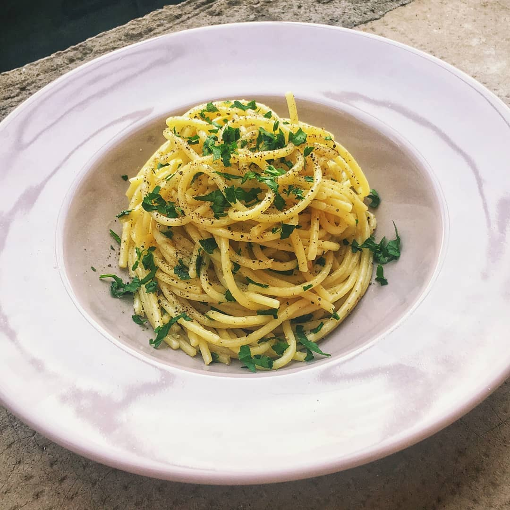
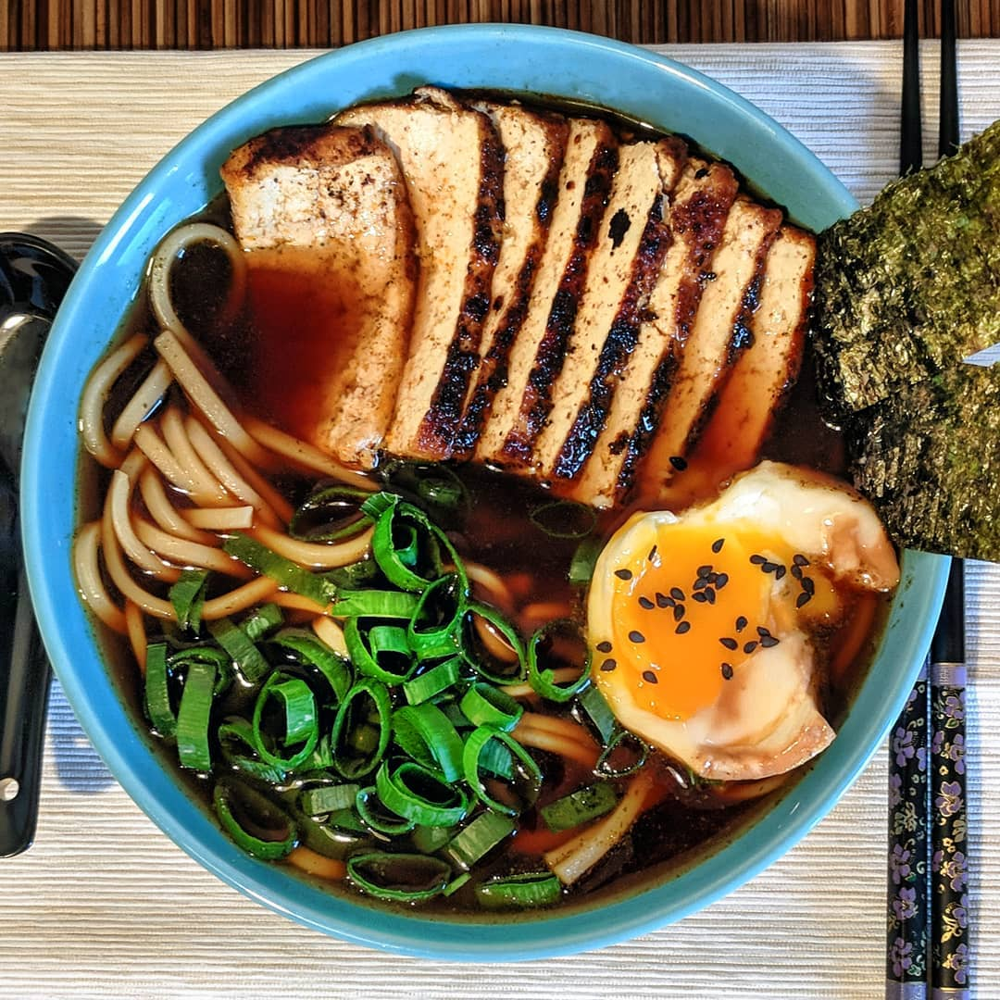
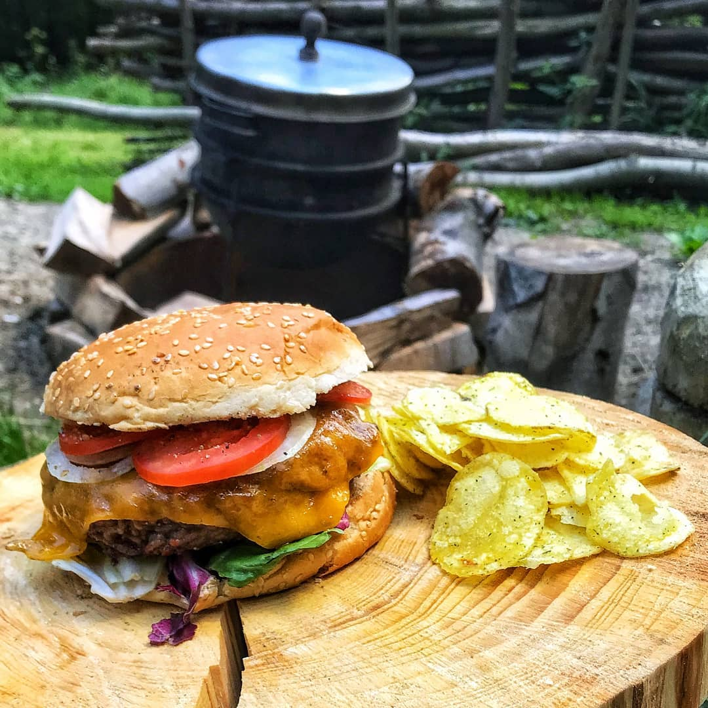
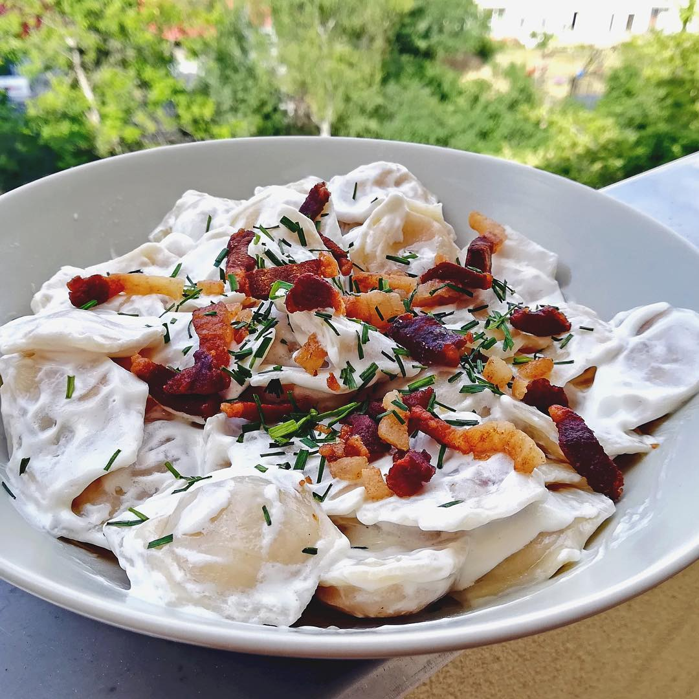
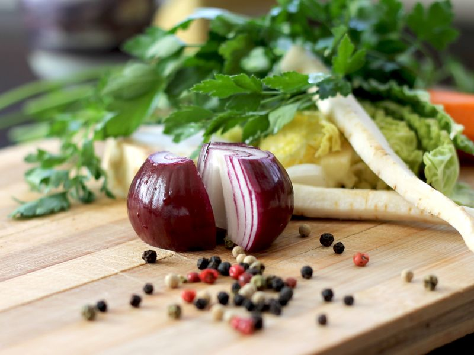
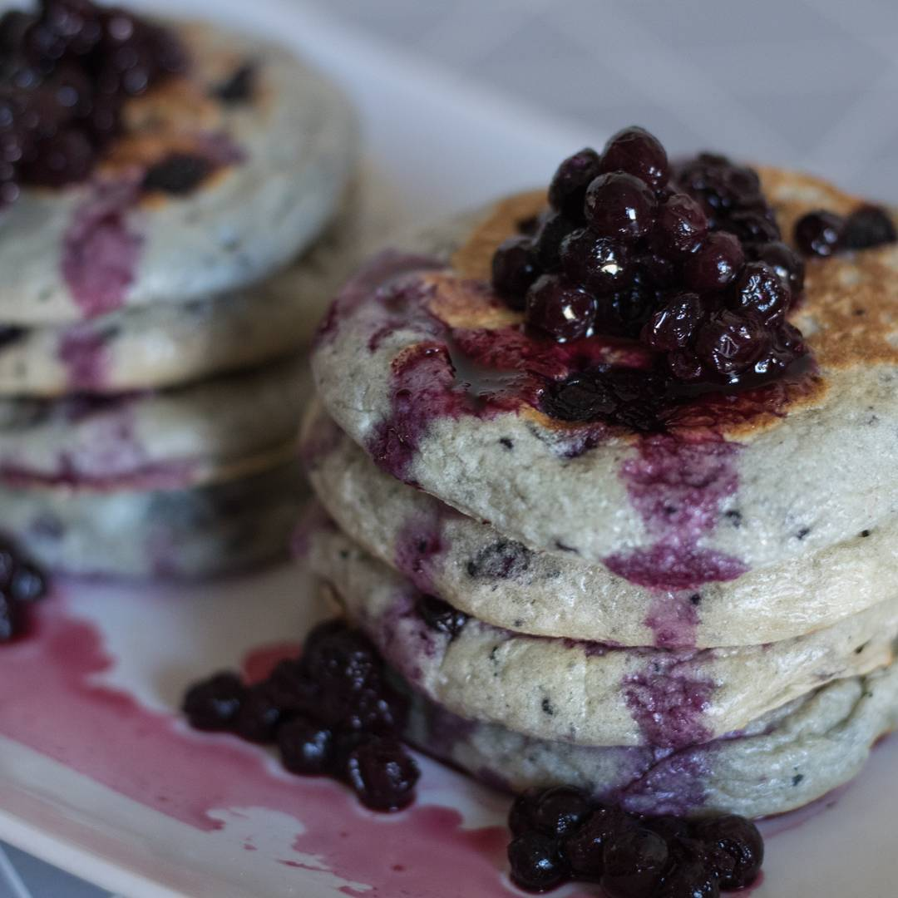
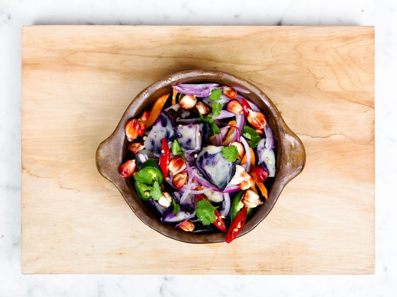

Score: 100%
Reasons:
- Matches the target profile in 22 labels.
- Labels matching the most are: spaghetti, pasta, european food.
- Differs from the target profile only in 0 labels.

Score: 80%
Reasons:
- Matches the target profile in 15 labels.
- Labels matching the most are: lunch, food, noodle.
- Differs from the target profile only in 0 labels.

Score: 75%
Reasons:
- Matches the target profile in 17 labels.
- Labels matching the most are: fast food, breakfast, food.
- Differs from the target profile only in 0 labels.

Score: 68%
Reasons:
- Matches the target profile in 9 labels.
- Labels matching the most are: salad, food, dish.
- Differs from the target profile only in 0 labels.

Score: 62%
Reasons:
- Matches the target profile in 11 labels.
- Labels matching the most are: leaf vegetable, salad, food.
- Differs from the target profile only in 1 labels.

Score: 56%
Reasons:
- Matches the target profile in 12 labels.
- Labels matching the most are: pancake, blackberry, breakfast.
- Differs from the target profile only in 0 labels.

Score: 21%
Reasons:
- Matches the target profile in 3 labels.
- Labels matching the most are: recipe, food, vegetable.
- Differs from the target profile only in 1 labels.
Score: -2%
Reasons:
- Matches the target profile in 0 labels.
- Labels matching the most are: .
- Differs from the target profile only in 1 labels.
Score: -8%
Reasons:
- Matches the target profile in 0 labels.
- Labels matching the most are: .
- Differs from the target profile only in 3 labels.
Score: -11%
Reasons:
- Matches the target profile in 0 labels.
- Labels matching the most are: .
- Differs from the target profile only in 4 labels.